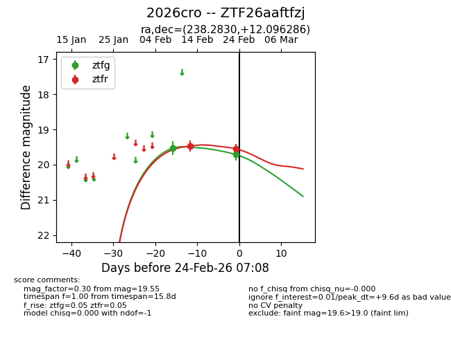
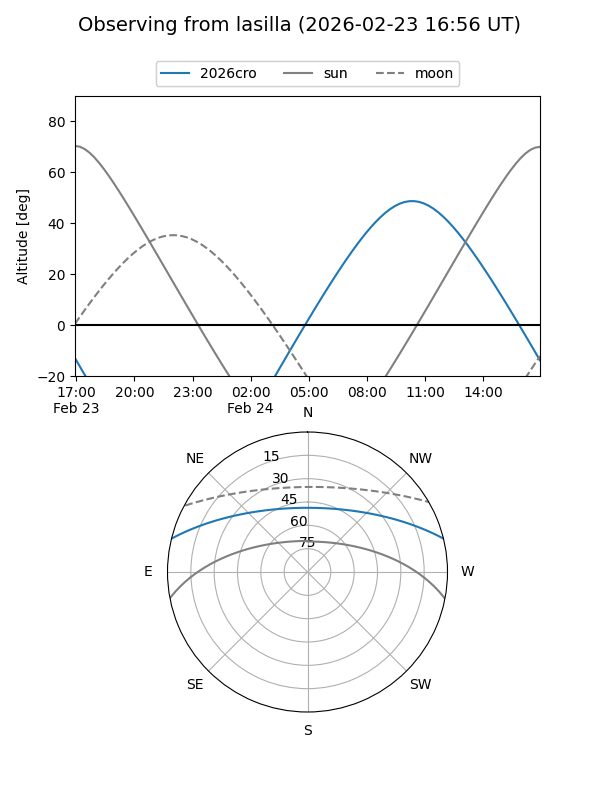
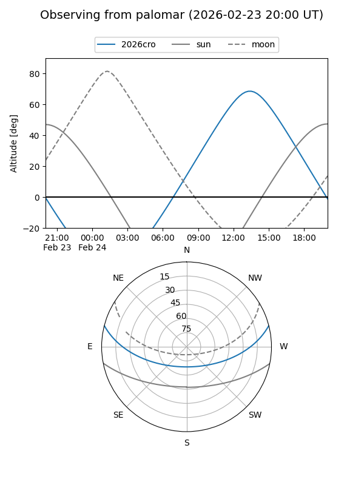

2026cro
Target 2026cro at 2026-02-24 09:08
Aliases and brokers:
FINK: link
Lasair: link
ALeRCE: link
TNS: link
YSE: link
alt names
ZTF26aaftfzj (ztf,fink_ztf)
2026cro (tns,yse)
Coordinates:
equatorial (ra, dec) = 238.2830,+12.09629
equatorial (HMS+DMS) = 15:53:07.91,+12:05:46.63
galactic (l, b) = (22.6435,+44.93732)
Flags:
Photometry:
last ztfg=19.71, ztfr=19.55
2 ztfg, 2 ztfr detections
Lightcurve

Visibility


Additional plots